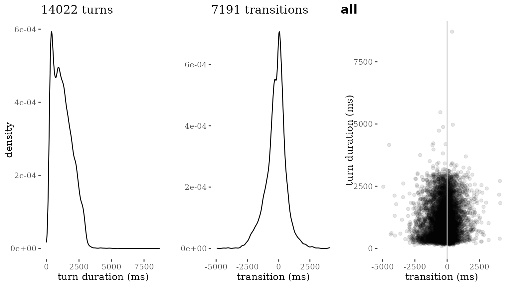
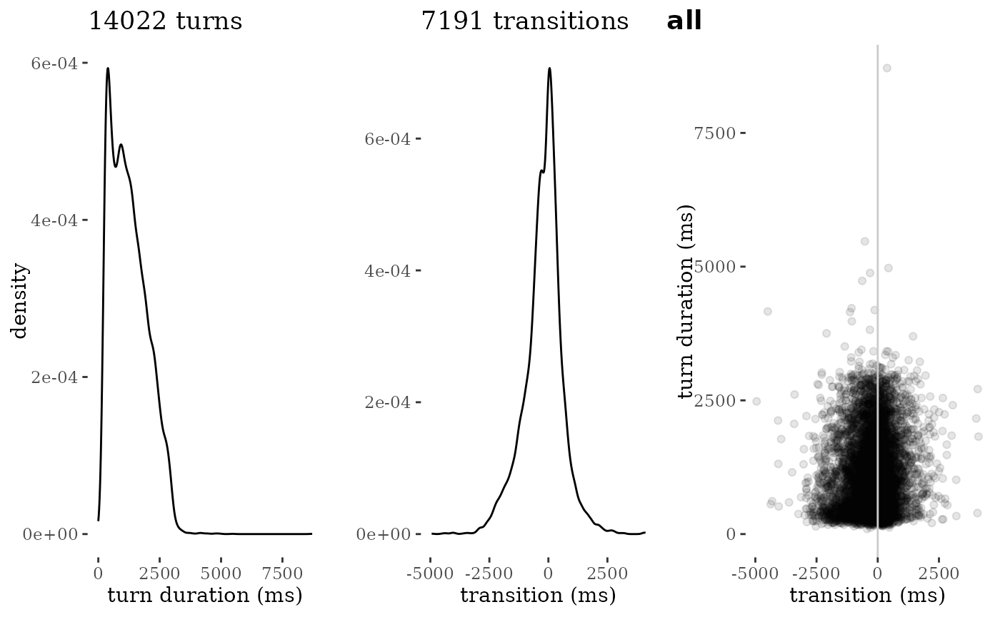
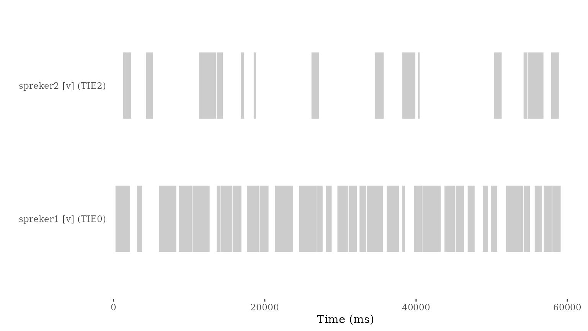
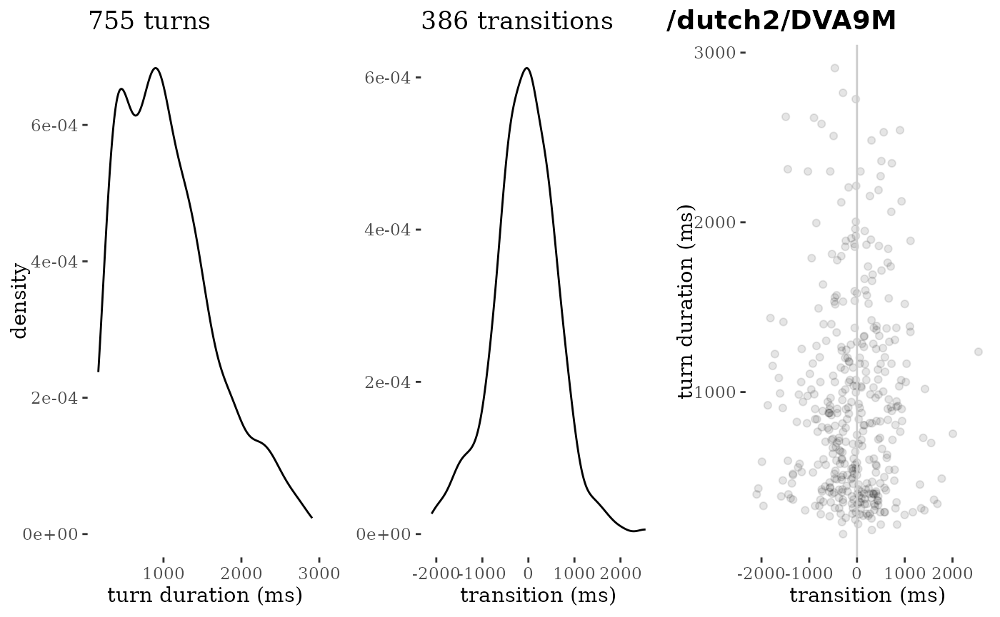
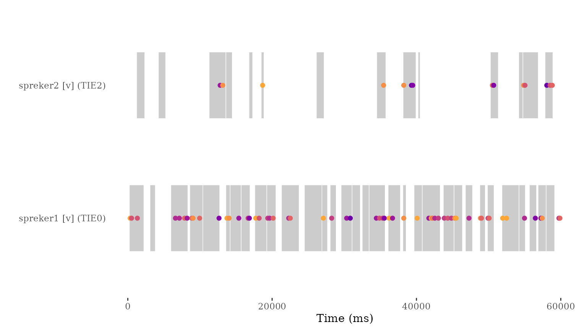

Basic workflow with talkr
workflow.Rmd
library(talkr)Loading the data
We will be using the IFADV corpus as example data for the workflow of
talkr. This is a corpus consisting of 20 dyadic
conversations in Dutch, published by the Nederlandse Taalunie in 2007
(source)
The snippet below initializes the talkr dataset using the ifadv data. For more information about the IFADV dataset, see the repository link.
data <- init(ifadv::ifadv)
#> Warning in init(ifadv::ifadv): Column 'uid' already exists in the dataset. This
#> column will be renamed to `original_uid`.Essential to any talkr workflow is a minimal set of data
fields. These are the following: * source: the source
conversation (a corpus can consist of multiple sources) *
begin: begin time (in ms) of an utterance *
end: end time (in ms) of an utterance *
utterance: content of an utterance *
participant: the person who produced the utterance
The init() function takes these minimal fields and
generates a few more based on them. These are: * uid: a
unique identifier at utterance-level, used to identify, select and
felter specific utterances * duration: the duration (in ms)
of the utterance, generated by subtracting begin from
end
The init() function can be used to rename columns if
necessary. For example, if the column participant is named
speaker, we can rename it as follows:
talkr_data <- init(data,
participant = "speaker")A dataset can contain additional fields. For instance, the IFADV
sample dataset also contain language (which is Dutch) and
utterance_raw (a fuller, less processed version of the
utterance content). It also contains measures related to turn-taking and
timing, including FTO (floor transfer offset, the offset
between current turn and that of a prior participant, in milliseconds)
and freq and rank, frequency measures of the
utterance content.
Workflow 1: Quality control
Summary statistics
The report_stats function provides a simple summary of a
dataset, including the total number of utterances, the total duration of
the conversation, the number of participants, and the number of
sources.
report_stats(data)
#> ### Corpus-level statistics
#>
#> nr of sources: 20
#> nr of participants: 40
#> nr of turns: 14022
#> mean turn duration (ms): 1257
#> turns per hour: 2806
#> total recording (min): 299.9
#> total recording (hours): 5
#> total speaking time (min): 293.8
#> total speaking time (hours): 4.9
#>
#> ### Conversation-level statistics (per source)
#>
#> |source | nr of participants| total recording (ms)| total recording (min)| total speaking time (ms)| total speaking time (min)|
#> |:---------------|------------------:|--------------------:|---------------------:|------------------------:|-------------------------:|
#> |/dutch2/DVA10O | 2| 899341| 15| 829140| 13.8|
#> |/dutch2/DVA11Q | 2| 899061| 15| 884734| 14.7|
#> |/dutch2/DVA12S | 2| 900000| 15| 785323| 13.1|
#> |/dutch2/DVA13U | 2| 900000| 15| 877328| 14.6|
#> |/dutch2/DVA14W | 2| 900000| 15| 796924| 13.3|
#> |/dutch2/DVA15Y | 2| 899379| 15| 1032776| 17.2|
#> |/dutch2/DVA16AA | 2| 900000| 15| 974312| 16.2|
#> |/dutch2/DVA17AC | 2| 899961| 15| 885257| 14.8|
#> |/dutch2/DVA19AG | 2| 899236| 15| 788268| 13.1|
#> |/dutch2/DVA1A | 2| 899538| 15| 879384| 14.7|
#> |/dutch2/DVA20AI | 2| 899145| 15| 918466| 15.3|
#> |/dutch2/DVA22AL | 2| 899838| 15| 879580| 14.7|
#> |/dutch2/DVA24AK | 2| 900000| 15| 887106| 14.8|
#> |/dutch2/DVA2C | 2| 899635| 15| 1097376| 18.3|
#> |/dutch2/DVA3E | 2| 899091| 15| 851393| 14.2|
#> |/dutch2/DVA4C | 2| 899108| 15| 850314| 14.2|
#> |/dutch2/DVA6H | 2| 899981| 15| 889722| 14.8|
#> |/dutch2/DVA7B | 2| 899664| 15| 913682| 15.2|
#> |/dutch2/DVA8K | 2| 900000| 15| 807418| 13.5|
#> |/dutch2/DVA9M | 2| 899773| 15| 802054| 13.4|
#>
#> ### Turn statistics (per source)
#>
#> |source | nr of turns| mean turn duration (ms)| shortest turn (ms)| longest turn (ms)| turns per hour|
#> |:---------------|-----------:|-----------------------:|------------------:|-----------------:|--------------:|
#> |/dutch2/DVA10O | 501| 1655| 233| 3001| 2005|
#> |/dutch2/DVA11Q | 792| 1117| 124| 4188| 3171|
#> |/dutch2/DVA12S | 640| 1227| 173| 3819| 2560|
#> |/dutch2/DVA13U | 717| 1224| 196| 3173| 2868|
#> |/dutch2/DVA14W | 721| 1105| 97| 3115| 2884|
#> |/dutch2/DVA15Y | 770| 1341| 154| 4973| 3082|
#> |/dutch2/DVA16AA | 604| 1613| 292| 3447| 2416|
#> |/dutch2/DVA17AC | 782| 1132| 0| 3453| 3128|
#> |/dutch2/DVA19AG | 648| 1216| 136| 2988| 2594|
#> |/dutch2/DVA1A | 681| 1291| 143| 3417| 2725|
#> |/dutch2/DVA20AI | 758| 1212| 167| 5472| 3035|
#> |/dutch2/DVA22AL | 745| 1181| 143| 3448| 2981|
#> |/dutch2/DVA24AK | 685| 1295| 121| 4421| 2740|
#> |/dutch2/DVA2C | 765| 1434| 217| 3415| 3061|
#> |/dutch2/DVA3E | 753| 1131| 175| 3199| 3015|
#> |/dutch2/DVA4C | 719| 1183| 145| 3697| 2879|
#> |/dutch2/DVA6H | 683| 1303| 122| 4786| 2732|
#> |/dutch2/DVA7B | 691| 1322| 197| 3395| 2765|
#> |/dutch2/DVA8K | 612| 1319| 200| 8712| 2448|
#> |/dutch2/DVA9M | 755| 1062| 163| 2909| 3021|Visual quality checks
The plot_quality function provides a visual check of the
nature of the data, by visualizing the distribution of turn durations,
and transition timing.
Transition timing is similar to FTO, but calculated without additional quality checks: transitions are identified when the participant changes from one turn to the next. The transition time is then calculated as the difference between the beginning of the turn of the new participant, and the end of the turn of the previous one.
By default, plot_quality() will plot the entire
dataset:
plot_quality(data)
Quality plots can also be run for a specific source:
plot_quality(data, source = "/dutch2/DVA8K")
A quality plot consists of three separate visualizations, all designed to allow rapid visual inspection and spotting oddities: 1. A density plot of turn durations. This is normally expected to look like a distribution that has a peak around 2000ms (2 seconds) and maximum lengths that do not far exceed 10000ms (10 seconds) (Liesenfeld & Dingemanse 2022). The goal of this plot is to allow eyeballing of oddities like turns of extreme durations or sets of turns with the exact same duration (unlikely in carefully segmented conversational data). 2. A density plot of turn transition times. A plot like this is expected to look like a normal distribution centered around 0-200ms (Stivers et al. 2009). Deviations from this may signal problems in the dataset, for instance due to imprecise or automated annotation methods. 3. A scatterplot of turn transition (x) by turn duration. This combines both distributions and is expected to look like a cloud of datapoints that is thickest in the middle region. Any standout patterns (for instance, turns whose duration is equal to their transition time) are indicative of problems in the segmentation or timing data.
Workflow 2: Plot conversations
Another key use of talkr is to visualize conversational
patterns. A first key way to do so is geom_turn(), a
ggplot2-compatible geom that visualizes the timing and duration of turns
in a conversation.
library(ggplot2)
p <- data |>
dplyr::filter(source == "/dutch2/DVA9M") |>
dplyr::filter(end < 60000) |>
ggplot(aes(x = end, y = participant)) +
geom_turn(aes(
begin = begin,
end = end)) +
xlab("Time (ms)") +
ylab("") +
theme_turnPlot()
p
two specific geometries are available: geom_turn and
geom_token. In addition, there is a
talkr-specific theme provided.
library(ggplot2)
p <- data |>
dplyr::filter(source == "/dutch2/DVA9M") |>
dplyr::filter(end < 60000) |>
ggplot(aes(x = end, y = participant)) +
geom_turn(aes(
begin = begin,
end = end)) +
xlab("Time (ms)") +
ylab("") +
theme_turnPlot()
p
This plot can be overlayed with plotted occurrences of tokens.
To do so, we first need to calculate the token frequencies:
tokens <- tokenize(data)
tokens
#> # A tibble: 70,074 × 9
#> source uid participant nwords token order relative_time frequency rank
#> <chr> <chr> <chr> <int> <chr> <chr> <dbl> <dbl> <int>
#> 1 /dutch2/D… dutc… spreker1 [… 1 [lau… only 840 0.0114 17
#> 2 /dutch2/D… dutc… spreker1 [… 7 oké first 1826 0.00221 77
#> 3 /dutch2/D… dutc… spreker1 [… 7 nou midd… 2115 0.00955 21
#> 4 /dutch2/D… dutc… spreker1 [… 7 ik midd… 2404 0.0288 3
#> 5 /dutch2/D… dutc… spreker1 [… 7 ga midd… 2693 0.00171 90
#> 6 /dutch2/D… dutc… spreker1 [… 7 je midd… 2982 0.0191 6
#> 7 /dutch2/D… dutc… spreker1 [… 7 even midd… 3271 0.00133 107
#> 8 /dutch2/D… dutc… spreker1 [… 7 vert… last 3560 0.000171 468
#> 9 /dutch2/D… dutc… spreker1 [… 3 van first 3885 0.0117 16
#> 10 /dutch2/D… dutc… spreker1 [… 3 gist… midd… 4246 0.000342 272
#> # ℹ 70,064 more rowsToken frequencies are calculated over the entire dataset. For source-specific data, it is recommended to filter the source prior to tokenization:
tokens <- data |>
dplyr::filter(source == "/dutch2/DVA9M") |>
tokenize()
tokens
#> # A tibble: 3,971 × 9
#> source uid participant nwords token order relative_time frequency rank
#> <chr> <chr> <chr> <int> <chr> <chr> <dbl> <dbl> <int>
#> 1 /dutch2/D… dutc… spreker1 [… 10 ja first 327 0.0458 1
#> 2 /dutch2/D… dutc… spreker1 [… 10 dat midd… 526 0.0242 5
#> 3 /dutch2/D… dutc… spreker1 [… 10 is midd… 726 0.0144 14
#> 4 /dutch2/D… dutc… spreker1 [… 10 lang midd… 926 0.000252 518
#> 5 /dutch2/D… dutc… spreker1 [… 10 gele… midd… 1125 0.000252 440
#> 6 /dutch2/D… dutc… spreker1 [… 10 dat midd… 1325 0.0242 5
#> 7 /dutch2/D… dutc… spreker1 [… 10 we midd… 1524 0.00630 36
#> 8 /dutch2/D… dutc… spreker1 [… 10 elka… midd… 1724 0.000755 174
#> 9 /dutch2/D… dutc… spreker1 [… 10 hebb… midd… 1924 0.00252 73
#> 10 /dutch2/D… dutc… spreker1 [… 10 gezi… last 2123 0.000504 258
#> # ℹ 3,961 more rowsBefore we plot the tokens over the turns, we need to select the tokens we want to plot (e.g. the top 10 ranked), and the time window they occur in:
We can plot the tokens over the turns.
p +
geom_token(data = tokenselection,
aes(x = relative_time,
y = participant,
color = rank)) +
viridis::scale_color_viridis(option = "plasma", direction = -1, begin = 0.2, end = 0.8)